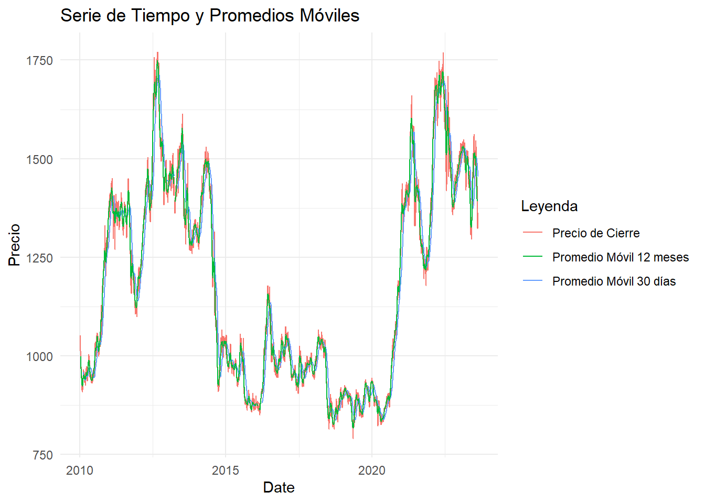

Chapter 6 Promedio Movil- Rezago y Estacionalidad
## Warning: package 'dplyr' was built under R version 4.2.3##
## ######################### Warning from 'xts' package ##########################
## # #
## # The dplyr lag() function breaks how base R's lag() function is supposed to #
## # work, which breaks lag(my_xts). Calls to lag(my_xts) that you type or #
## # source() into this session won't work correctly. #
## # #
## # Use stats::lag() to make sure you're not using dplyr::lag(), or you can add #
## # conflictRules('dplyr', exclude = 'lag') to your .Rprofile to stop #
## # dplyr from breaking base R's lag() function. #
## # #
## # Code in packages is not affected. It's protected by R's namespace mechanism #
## # Set `options(xts.warn_dplyr_breaks_lag = FALSE)` to suppress this warning. #
## # #
## #################################################################################
## Attaching package: 'dplyr'## The following objects are masked from 'package:xts':
##
## first, last## The following objects are masked from 'package:stats':
##
## filter, lag## The following objects are masked from 'package:base':
##
## intersect, setdiff, setequal, unionlibrary(ggplot2)
library(zoo)
# Simbolo del aceite de soya en Yahoo Finance
company <- 'ZS=F'
# Definir fecha de inicio y del día de hoy
start <- as.Date("2010-01-01")
today <- Sys.Date()
# Conexión a Yahoo Finance para descargar la información
df <- getSymbols(company, src = "yahoo", from = start, to = today, auto.assign = FALSE)## Warning: ZS=F contains missing values. Some functions will not work if objects
## contain missing values in the middle of the series. Consider using na.omit(),
## na.approx(), na.fill(), etc to remove or replace them.# Convertir el objeto xts a un dataframe para usarlo con dplyr y ggplot2
df <- data.frame(Date = index(df), coredata(df))
# Calcular el promedio móvil de 30 días usando el nombre correcto de la columna
df <- df %>%
mutate(MA_30 = rollmean(`ZS.F.Close`, k = 30, fill = NA, align = "right"))
# Introducir un rezago (por ejemplo, un lag de 1 día)
df <- df %>%
mutate(Lag_1 = lag(`ZS.F.Close`, n = 1))
# Calcular un promedio móvil centrado de 12 meses (útil para datos mensuales)
df <- df %>%
mutate(MA_12 = rollmean(`ZS.F.Close`, k = 12, fill = NA, align = "center"))
# Gráfica del precio de cierre, promedio móvil de 30 días y promedio móvil centrado de 12 meses
ggplot(df, aes(x = Date)) +
geom_line(aes(y = `ZS.F.Close`, color = "Precio de Cierre")) +
geom_line(aes(y = MA_30, color = "Promedio Móvil 30 días"), na.rm = TRUE) +
geom_line(aes(y = MA_12, color = "Promedio Móvil 12 meses"), na.rm = TRUE) +
ggtitle("Serie de Tiempo y Promedios Móviles") +
ylab("Precio") +
labs(color = "Leyenda") +
theme_minimal()